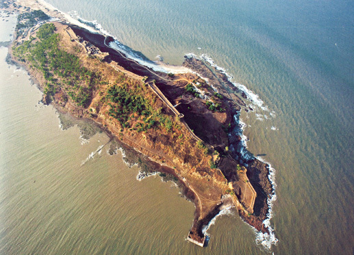
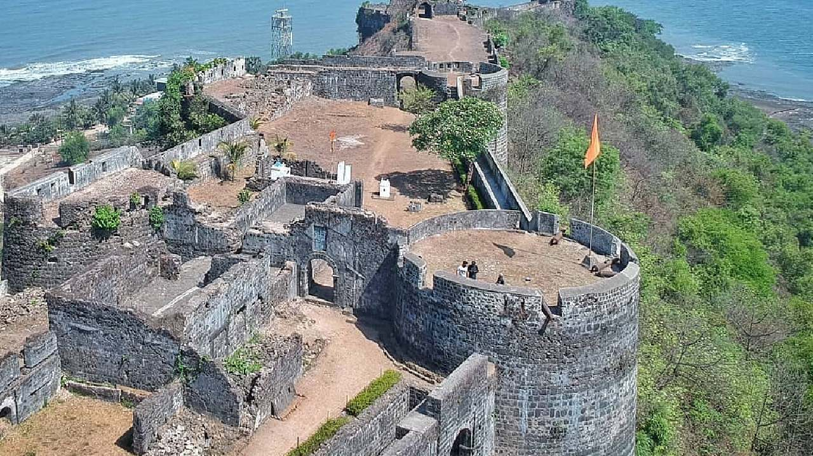
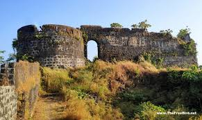

कोर्लाई किल्ला
Location : Click Here For Google Map
- माहिती
- कोर्लाई किल्ला महाराष्ट्र राज्याच्या रायगड जिल्ह्यात स्थित एक ऐतिहासिक किल्ला आहे. हा किल्ला वाशी वेस, अलिबागच्या जवळ समुद्र किनाऱ्यावर आहे. किल्ल्याची बांधणी १६व्या शतकात पोर्तुगीजांनी केली होती, आणि त्याचे महत्त्व विशेषतः समुद्राच्या किल्ला म्हणून आहे.
किल्ल्याच्या भिंती, बंदुकीचे ठिकाण आणि मजबूत गडद संरचना किल्ल्याचे संरक्षण करणे सोपे करत होती. किल्ल्याच्या शिखरावरून समुद्र आणि परिसराचे सुंदर दृश्य दिसते. किल्ल्याच्या आवारात एक चर्च, एक देवस्थान आणि किल्ल्याच्या मुख्य प्रवेशद्वाराची रचना एक आकर्षक सांस्कृतिक आणि ऐतिहासिक महत्त्व असलेल्या स्थळाचा भाग आहे.
आजकाल, कोर्लाई किल्ला पर्यटकांसाठी एक आदर्श स्थान बनले आहे, जे इतिहास, सौंदर्य आणि समुद्र किनाऱ्यावर स्थित आहे. किल्ल्याचे दृश्य, त्याची ऐतिहासिक महत्त्वाची इमारत आणि समुद्राच्या जवळ असलेला सुंदर वातावरण त्याला एक अनोखा आकर्षण देतो.
Explore the historical beauty


